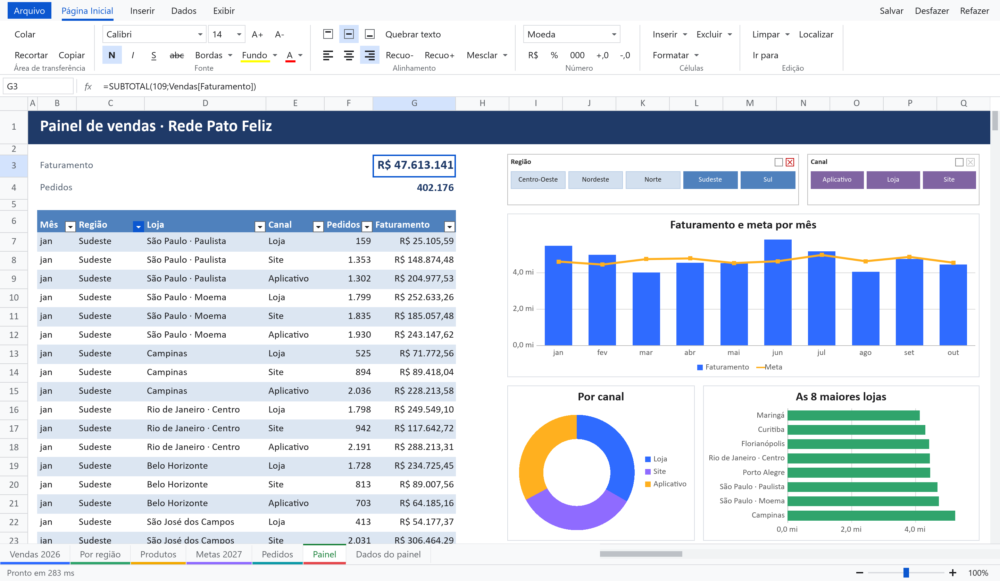
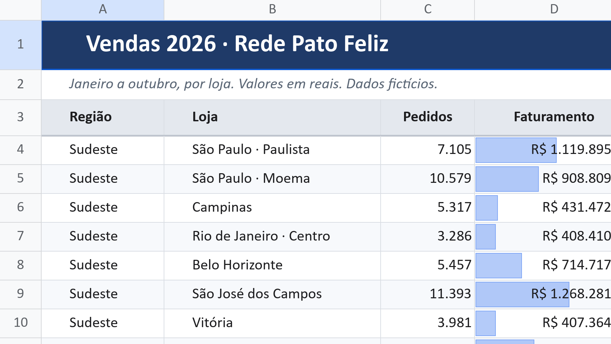
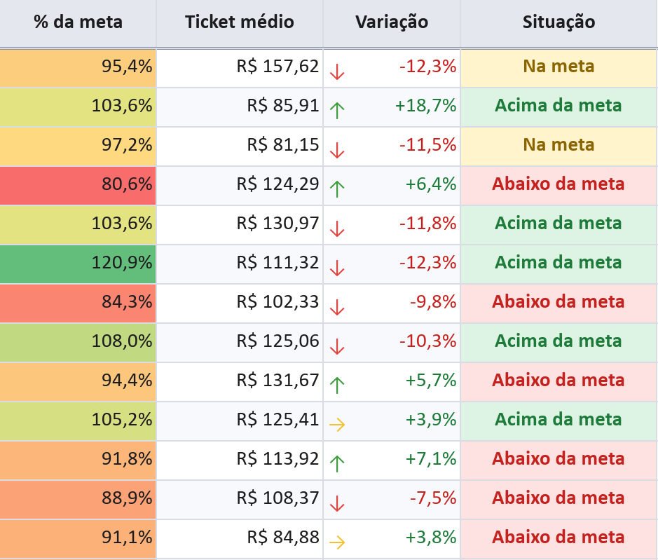
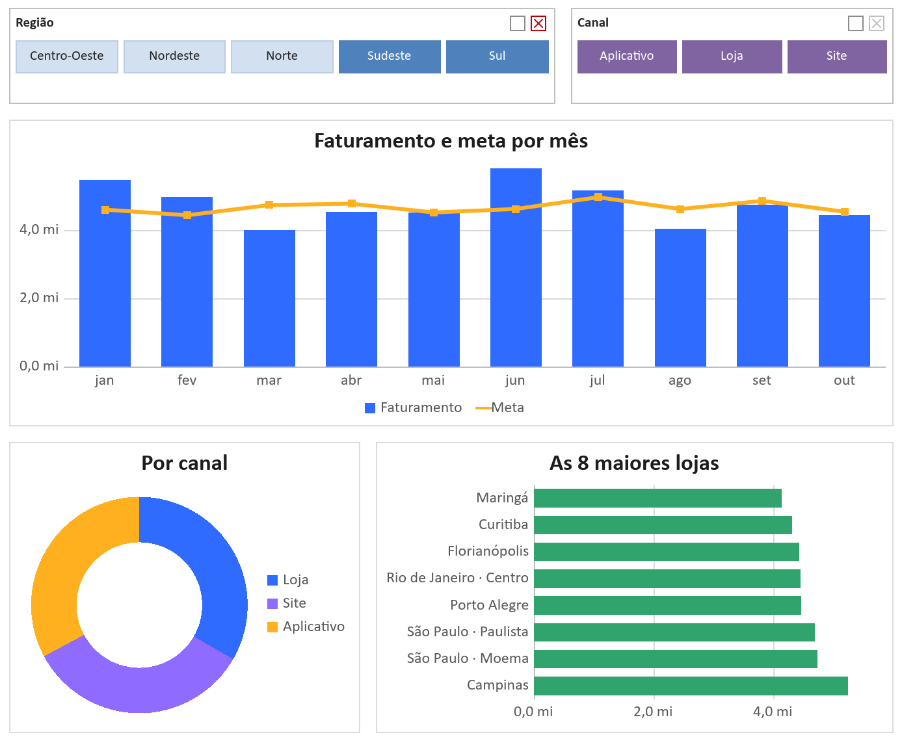
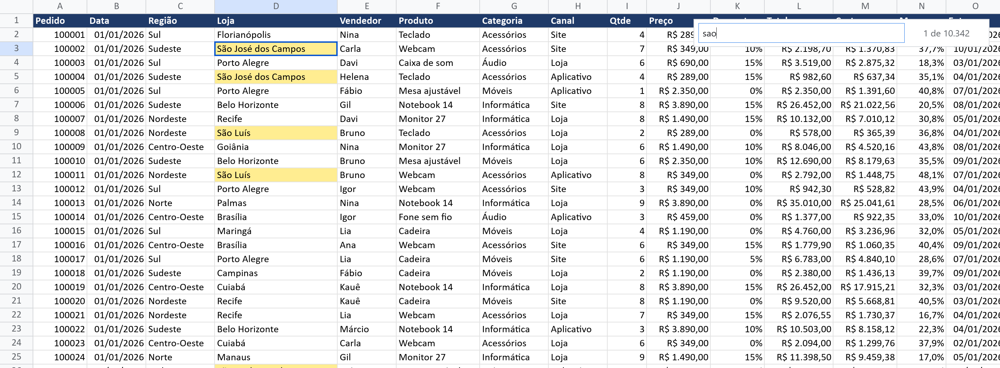

duck-sheets
Planilhas gigantes.
Abertas num instante.
Aquele arquivo enorme que deixa o computador pensando? Aqui ele aparece na tela antes de você piscar. Abre, calcula, edita e salva. E nunca trava.

Velocidade
Rápido de um jeito
que você sente.
Testamos com uma planilha de trabalho real de 194 MB, com 20 abas, 24 milhões de células e 10 milhões de fórmulas. Um arquivo que o OnlyOffice nem consegue abrir.
Medido num Ryzen 9 5950X (16 núcleos), 64 GB e AMD RX 9070 XT, Windows 11, em 23/11/2026.
Lado a lado
39 segundos.
Ou 0,19.
Abrimos a mesma planilha no duck-sheets e no OnlyOffice, no mesmo MacBook, e cronometramos até os dados aparecerem na tela.
Como medimos: em 22/11/2026, num MacBook Air M1 com 8 GB, com o OnlyOffice 9.0.4 e planilhas sintéticas de 37 colunas geradas pelo projeto. O duck-sheets mede os próprios tempos (--bench). No OnlyOffice, um script tira capturas da tela a cada meio segundo e marca o primeiro quadro em que a grade com dados aparece. Valores de duas rodadas, depois de uma de aquecimento. Rode você mesmo: scripts/bench/vs_onlyoffice.py.
Nunca trava.
Nem por um segundo.
O duck-sheets mostra primeiro o que está na sua tela. O resto vai chegando por trás, aba por aba, enquanto você já rola, busca e navega.
Fidelidade
Igual ao Excel.
Até a vírgula.
Reais, porcentagens, datas e horas aparecem exatamente como você formatou. Cores, bordas e células mescladas também. E com zoom, tudo continua nítido.
- Formatos brasileiros de número e data
- Fontes, cores, bordas e preenchimentos
- Células mescladas e painéis congelados
- Larguras e alturas como no original

Formatação condicional
Cores que contam
a história dos números.
Escalas de cor, barras de dados, setas e destaques aparecem do jeito que foram criados no Excel. Bata o olho e veja quem está acima da meta.

Painéis
Filtrou?
Tudo muda.
Gráficos, segmentações e tabelas dinâmicas funcionam de verdade, não são só um desenho. Na nossa maior planilha de teste, as tabelas dinâmicas com os dados no próprio arquivo saem idênticas às do Excel: 38 de 38, com 94 mil valores conferidos.
- Gráficos que mudam junto com as células
- Segmentações e linhas do tempo clicáveis
- Tabelas dinâmicas, inclusive as do Power Pivot
- Botões, caixas de seleção, formas e imagens

Fórmulas
10 milhões de contas.
Menos de um segundo.
O duck-sheets recalcula a planilha inteira em segundo plano, com todos os núcleos. E o resultado bate: cada fórmula foi comparada com o valor que o Excel gravou.
SOMASES · PROCV · PROCX · ÍNDICE · CORRESP · FILTRO · ÚNICO · CLASSIFICAR · LET · TEXTO · FIMMÊS e mais de 150 funções, em português.
Busca
Ache qualquer coisa.
Com ou sem acento.
Aperte Ctrl+F e digite. O duck-sheets procura em todas as células ao mesmo tempo, e “sao” encontra “São Paulo”. Nesta aba de 900 mil células, a busca levou 4 milésimos de segundo.

Editar e salvar
Salva só o que mudou.
E confere antes.
O que você não tocou é copiado igual, byte a byte: macros, gráficos, conexões. O que mudou é relido e comparado com a sua tela. Só então o arquivo original é trocado.
Tudo o que você espera.
Do jeito que você já usa.
Arraste e pronto.
Solte o arquivo na janela ou use Ctrl+O.
Abre os arquivos que você tem.
Do Excel, com ou sem macros, e CSV com ponto e vírgula e vírgula decimal.
Os atalhos de sempre.
Ctrl+setas, Ctrl+G, Ctrl+C. Seus dedos já sabem.
Zoom sem perder nitidez.
Ctrl + roda do mouse, do jeito que você imagina.
Contas na hora.
Selecione e veja soma, média e contagem.
Filtre e classifique.
As setas no cabeçalho, com busca e lista de valores.
Agrupe e resuma.
Abra e feche grupos de linhas e colunas.
Errou? Desfaça.
Edição, filtro, segmentação ou macro inteira.
Macros que rodam. E só na planilha.
O código VBA da sua planilha é executado num ambiente fechado: sem acesso aos seus arquivos, à internet ou a outros programas. E só depois que você permite.
Range("B3").Value = "Margem"
End Sub
Uma fórmula. A lista inteira.
FILTRO, ÚNICO e CLASSIFICAR se espalham pelas células vizinhas e acompanham os dados.
Copie e cole em qualquer lugar.
Ctrl+C leva o que você está vendo para o e-mail, outro programa ou outra planilha, com os números já formatados.
Links que funcionam.
Ctrl+clique para ir a outra aba ou abrir o site.
Por dentro
Usa o seu computador.
Inteiro.
O duck-sheets divide a leitura da planilha entre todos os núcleos e deixa o desenho da tela com a placa de vídeo. Quanto melhor a máquina, mais rápido ele fica.
Números
Duas planilhas reais.
Tudo medido.
Uma base de dados enorme e um painel cheio de objetos, as duas do dia a dia de uma empresa.
| Base de dados194 MB · 20 abas | Painel19 MB · 21 abas | |
|---|---|---|
| O que tem dentro | ||
| Células com valor | 24.171.714 | 1.338.957 |
| Fórmulas | 10.111.650 | 140.250 |
| Gráficos · segmentações · dinâmicas | 37 · 46 · 72 | 20 · 26 · 21 |
| Abrir e calcular | ||
| Primeira tela com dados | 0,23 s | 0,27 s |
| Todas as abas prontas | 0,65 s | 0,35 s |
| Recalcular todas as fórmulas | 0,67 s | 0,01 s |
| Fórmulas iguais ao Excel | 100% | 100%1 |
| Dinâmicas com o layout do Excel | 67 de 722 | 21 de 21 |
| Salvar, com a conferência | ||
| Sem mudanças | 0,20 s | 1,0 s |
| Depois de 500 edições | 2,7 s | 1,1 s |
| Diferenças na cópia salva3 | 0 | 0 |
| Memória do programa inteiro | ||
| Com tudo aberto | 499 MB | 289 MB |
| Pico ao abrir | 552 MB | 426 MB |
Medido num Ryzen 9 5950X (16 núcleos), 64 GB e AMD RX 9070 XT, Windows 11, em 23/11/2026. Abertura: mediana de 5 rodadas, depois de uma de aquecimento, com o computador em uso normal. ¹ 140.249 calculadas e iguais; 1 usa uma função ainda não suportada e mantém o valor gravado. ² As 38 com os dados no arquivo e 29 das 34 do Modelo de Dados (Power Pivot). ³ Células e fórmulas comparadas com o calamine, um leitor independente. Detalhes e comandos: docs/BENCHMARKS.md.
Faz muito mais.
Com menos memória.
A primeira versão só mostrava a planilha e chegava a 954 MB para abrir aquele arquivo de 194 MB. Hoje ela calcula, edita e mexe nos painéis, com 42% menos no pico.
Medido no mesmo PC: em 21/11/2026 e em 23/11/2026.
Um programa de verdade.
Em todo computador.
Nada de navegador escondido por trás. O duck-sheets é nativo, abre como qualquer aplicativo e funciona igual nos três sistemas.
Grátis e de código aberto
Para sempre.
E com o código aberto.
O duck-office é gratuito e de código aberto. Sem assinatura, sem conta para criar, sem anúncio. Qualquer pessoa pode ler o código, conferir as medições e ajudar a melhorar.
Grátis de verdade.
Baixe, instale e use quanto quiser, em casa ou na empresa. Sem versão de teste e sem recurso trancado.
Código à vista.
Tudo o que o programa faz está no repositório. Sem caixa-preta: você vê exatamente o que acontece com os seus arquivos.
Números que você confere.
Os testes de velocidade desta página estão no código. Rode no seu computador e compare com o que quiser.
O que vem por aí
Muito já chegou.
E isso é só o começo.
O duck-sheets é o primeiro app do duck-office, uma suíte de escritório inteira construída para ser rápida.
- Pronto
Abrir e ver
Planilhas enormes abertas num instante, com a aparência do Excel.
- Pronto
Editar e salvar
Células, formatos, linhas e colunas, com desfazer e sem perder o resto do arquivo.
- Pronto
Fórmulas
Milhões de fórmulas recalculadas sem travar, com os mesmos resultados do Excel.
- Pronto
Painéis e macros
Gráficos, tabelas dinâmicas, segmentações, botões e o VBA da planilha.
- Pronto
Modelo de Dados
As tabelas dinâmicas do Power Pivot recalculadas, sem o Excel.
- Próximo passo
Versão para baixar
O teste final nos três sistemas e os pacotes.
- Depois
Editar gráficos
Criar e mudar gráficos, LAMBDA, impressão e PDF.
- Mais adiante
Textos e slides
Documentos e apresentações sobre a mesma base, com a mesma pressa.
duck-sheets.
Grátis. Em breve.
O código da versão 1.0 já está pronto e aberto. A versão para baixar chega depois do teste final no Windows, no Linux e no macOS.